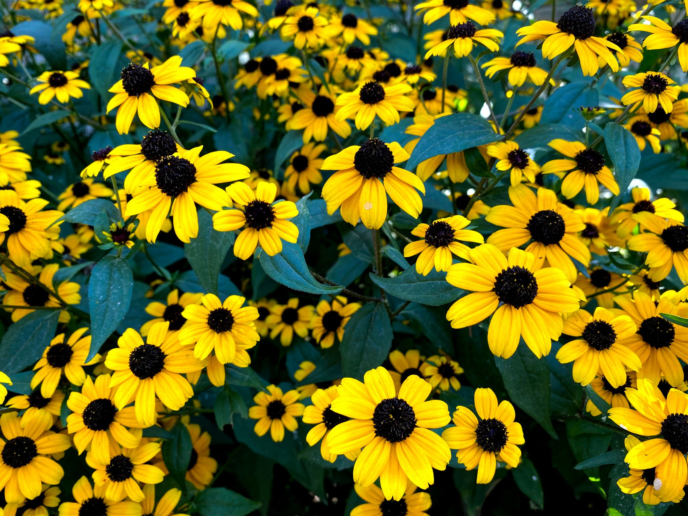
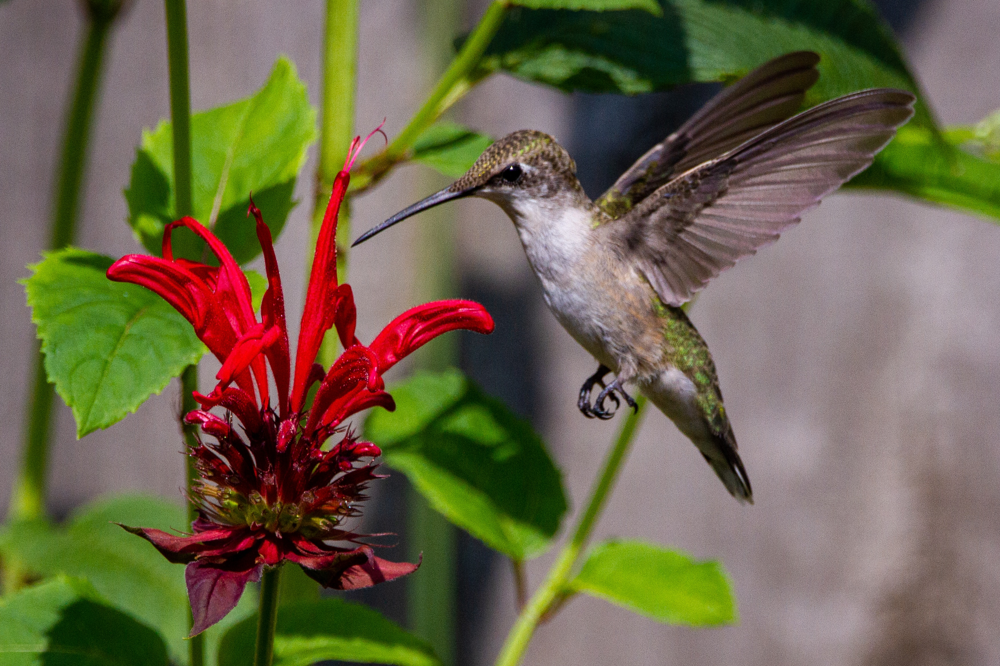

More Native Plants You Can Grow
There are many other plants you can choose to grow that are native to Tennessee! Such as: Purple Aster, Butterfly Milkweed, Spiderwort, Tennessee Coneflower, Dense Blazing Star, Shooting Star, Fire PinkBleeding Heart, and More!
Bee Balm
Bee balm is a native American plant not only known for its attract scarlet flowers that bloom in summertime but also its fragrant foliage. Slender, tubular flowers are produced in 2- to 3-inch-wide flower heads in June and July. Flower colors include white, pink, red, lavender, and purple. In the garden, its most frequent visitors are hummingbirds, bees,and butterflies because they have the long tongues required to reach the tubular flowers’ nectar. Bumblebees and a few other insects are too big to get into some of the smaller tubular flowers of some bee balms, so the insects practice something called “nectar robbing.” The insects punch a tiny hole at the base of the flower to access the nectar, bypassing the flower’s pollen and “robbing” it of its nectar.
